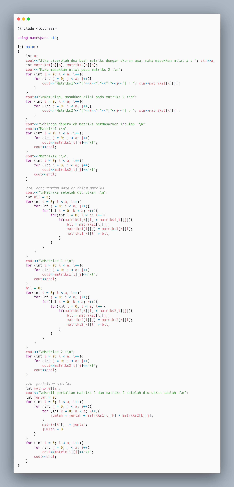
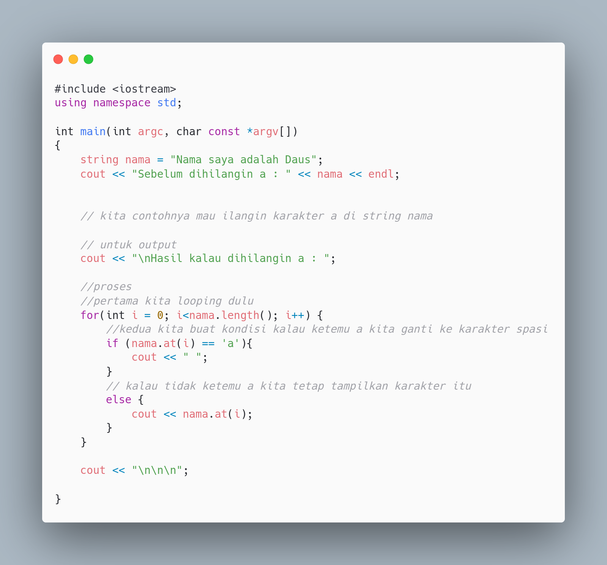

Pertanyaan Mengenai Modul III
Permisi kak, saya Alang Artha Iwana izin bertanya, untuk soal nomor 1 itu cara pengurutan matriks sebelum di kalikan masih bingung, mohon penjelasannya nggih 🙏
Jawab
Untuk pengurutan (sorting) dapat dilakukan dengan banyak cara, seperti menggunakan bubble, selection, dan insertion sort atau masih banyak algoritma sorting lainnya. Untuk lebih detailnya nanti kalian akan dapat di mata kuliah Algortma dan Struktur Data (algodat). Saya mengerjakan modul III ini, saya coba pakai algoritma bubble sort, mengingat algortma ini yang paling basic dibandingkan algoritma sorting lainnya.
Teman-teman dapat nonton video berikut untuk penjelasan mengenai algoritma bubble sort-nya
Biar jelas saya kasih deh kodingan nomor jurnal modul III nya

source code nya dapat diakses di sini ya https://drive.google.com/file/d/1wvauhhldFEE43Xs-avBM1SXNLpfOj1NH/view?usp=sharing
Salsabilla Mantika_F1D021066
-Mohon ma'af kak saya dari kelompok 7, izin bertanya. Kalo array kan bisa mengoprasikan matriks, nah gimana kalo semua elemen dari suatu matriks itu bentuknya pecahan? Apa ada perhitungan yang beda antara matriks yang semua elemennya bulat sama elemennya pecahan? Seandainya ada kira-kira gimana ya kak caranya? Terimakasih
-Berati intinya harus diubah dulu dalam bentuk desimal ya kak?
Jawab
Disclaimer ya, array itu sebenarnya tidak bisa mengoperasikan matriks, karena array itu tipe data bukan operator. Array membantu menyimpan lebih dari satu value seperti matriks yang banyak mengandung angka angka, makanya menggunakan array. Untuk element dari matriks yang berbentuk pecahan dapat menggunakan tipe data float bukan int. Perhitungannya sama dengan perhitungan semua elemen bilangan bulat, tidak ada bedanya.
Ali An Nuur_F1D021001
Izin bertanya kak, tadi nggk sempet bertanya.
Saya masih bingung yang bagian menampilkan hanya 1 string yang dihilangkan karakternya kak 🙏🙏
Jawab
String itu kan sebenarnya tipe data yang dapat menyimpan banyak karakter, entah itu huruf ataupun simbol, intinya hampir mirip dengan array. Untuk menampilkan suatu string yang dihilangkan karakternya ada banyak cara, namun algoritma sederhanya yaitu pertama kita ngelooping semua karakter pada string, pas proses looping berjalan kita buat kondisi, kalau yang ketemu karakter misalnya ‘a’ maka diskip atau jangan ditampung, kita tampung karakter yang selain huruf a.
Untuk kodingannya seperti ini

kak maaf sebelumnya saya bertanya sekarang🙏
saya Uswatul Ulya dengan NIM F1D021019 ingin bertanya apakah dalam satu codingan bisa terdiri dari berbagai array kak?, semisalnya program mengandung array dua dimensi dan tiga dimensi. Soalnya kalo dari contoh-contoh yang pernah saya temuin dia tu di satu program cuma mengandung array satu dimensi atau dua dimensi kak🙏
Jawab
Sabi banget, dalam satu codingan bisa memuat banyak dimensi array sekaligus, entah itu dimensi satu, dua, tiga bahkan bisa lebih dari itu. Oiya banyak dimensi array berbanding lurus dengan jumlah looping yang digunakan untuk mentracking array tersebut, kalau arraynya dimensi dua makan dua kali looping begitupun yang array dimensi 3. Untuk lebih jelasnya, dapat dilihat di link ini ya https://www.programiz.com/cpp-programming/multidimensional-arrays